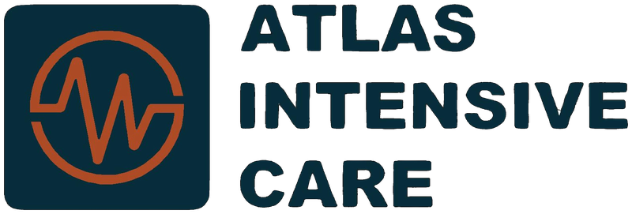
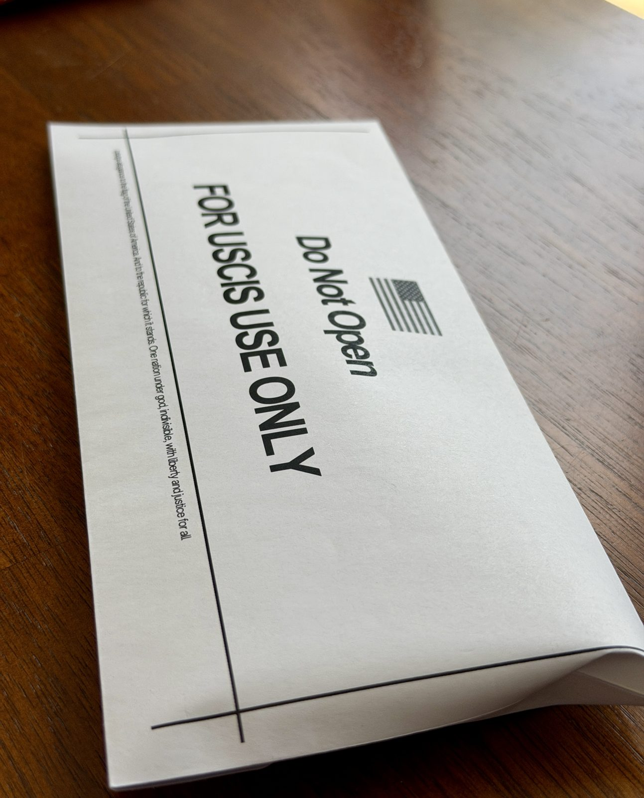

Dr. Arun Sharma is a USCIS-designated Civil Surgeon serving green card applicants across the Bay Area with same-day I-693 immigration medical exams, transparent pricing, and a sealed envelope ready to submit to USCIS — all from a clinic with 48 verified five-star reviews.
Form I-693 · Latest Edition 01/20/25
Includes physical exam + sealed I-693 form
Authorized Civil Surgeon by U.S. Citizenship & Immigration Services
Most exams completed in a single appointment
Per USCIS requirements, signed and sealed in your presence
English, Spanish, Hindi, Punjabi, Mandarin, Vietnamese
No mystery. No surprises. Most patients walk out the same day with paperwork in hand.
Same-day or next-day appointments are usually available. Mention any USCIS deadlines and we'll prioritize.
Fill in pages 1, 2, and the photo ID details on page 3 of your I-693. Send documents ahead of time if requested.
Physical exam, history review, and lab orders for TB, syphilis, and gonorrhea — coordinated with your insurance.
Once labs return, sign your form in front of the civil surgeon. Walk out with the official sealed I-693 envelope plus a digital copy.
Filling out Form I-693 correctly before you arrive saves time, reduces RFE (Request for Evidence) risk, and helps us complete everything in a single visit. Here's exactly what to do.
To make this easier for our patients, we host the most current edition of Form I-693 directly on our website — no need to navigate USCIS forms pages. Just click below to download.
Current edition: 01/20/25 (expires 09/30/27).
New: Our 2-page Patient Prep Guide walks you through what to bring, what to expect during your visit, and what happens after — printable and easy to share with family members.
Please complete Page 1, Page 2, and the photo identification details on Page 3. All information will be verified against your original photo identification during the medical examination. The medical sections of the form are completed by the civil surgeon during your appointment.
Complete your full legal name, mailing address, A-Number (if you have one), date of birth, and country of birth. Use the name exactly as it appears on your I-485 and passport — no nicknames or shortened forms.
Continue with email, phone, gender, height, weight, and eye/hair color. Be honest and thorough — the civil surgeon will verify these against your photo ID.
Fill in the photo identification details at the bottom of page 3 (passport number, driver's license number, or other government-issued ID). Stop there. The medical sections below are completed by the civil surgeon during your exam.
By federal regulation, your signature must be witnessed by the civil surgeon at the time of the exam. If you sign before your appointment, USCIS will reject the form and you will need to start over. The civil surgeon does not assume responsibility for the accuracy of information you provide on pages 1–3 — please double-check everything carefully before arriving.
To make your appointment more efficient, the doctor may ask you to upload or email documents ahead of time for cross-verification, or to share them in a HIPAA-compliant secure folder for review before your visit. This is especially helpful for patients with vaccination records from other countries, prior medical conditions, or complex histories. We'll send you a secure upload link if needed when you book.
Use a black ballpoint pen. Print clearly. If you make a mistake, do not use white-out — start a fresh form. USCIS rejects forms with any white-out, marker, pencil, or correction tape.
Passport, driver's license, or state-issued ID. Required to verify your identity against your I-693 form.
Any records you have, from any country. We accept records from CVS, Walgreens, Costco, Walmart, school systems, and foreign clinics.
Documents about chronic conditions, mental health treatment, prior TB exposure, or substance use treatment.
Cash, credit/debit card, or check for the $350 fee. Insurance card if you have one (used to bill labs and vaccines).

Every USCIS-compliant I-693 examination ends the same way: an envelope, signed and sealed in your presence by the civil surgeon, ready to submit directly with your I-485 application.
You also receive a complimentary digital copy for your records, and we keep a secure copy on file in case you ever need a replacement.
USCIS requires the envelope remain sealed until they open it. Do not open it yourself.
We publish our prices because immigration is stressful enough. Here's exactly what you'll pay.
Medical exam + Form I-693 paperwork + sealed envelope
Most patients choose this for speed and peace of mind.
Often drawn right at our office during your visit — or, when it's simpler, sent to a nearby lab we work with. Either way, we handle it: no appointment to book on your own, no insurance to sort out, no extra payments if you go through us. Results come straight back to us in about 4 days. You're also welcome to use insurance at an outside draw center, but pricing through insurance varies — we recommend checking with your insurer about coverage for the QuantiFERON TB test, syphilis screening, and immunity profile (MMR, varicella, hepatitis B) for adults 18–64.
Vaccines (if needed) are typically covered by insurance, or $60–$150 each cash.
A selection of recent 5-star reviews from our verified Google Business Profile. Every one is a real patient — read all 48 on Google.
"I cannot recommend Dr. Arun Sharma highly enough! He is incredibly patient and professional. During a time when we were feeling completely overwhelmed and stressed, his guidance and support were a true lifesaver. Thanks to his expertise, we successfully completed the medical examination reports required by the Immigration Bureau. Working with him gave us such peace of mind. A doctor this exceptional deserves to be recognized — he is truly a hidden gem!"
“Dr Arun Sharma was very professional, kind, and detail oriented! He was able to give me a complete break-down of the entire process for my USCIS filing / medical examination and left me at ease through the entire process. I would highly recommend him and his practice to anyone in need of such services or any medical care! Thank you once again.”
“Dr Sharma was friendly, helpful and very responsive. I especially appreciated his swift and timely provision of what I needed. I was on a very tight timeline and Dr Sharma helped make that happen! I would highly recommend.”
“I had a fantastic experience with Dr. Sharma for my immigration medical exam (I-693). The entire process was seamless and efficient. Dr. Sharma was incredibly thorough during the examination, taking the time to explain every step and answering all my questions regarding USCIS requirements. The paperwork was handled and finalized much faster than I anticipated.”
“Finding a doctor who is both highly skilled and genuinely kind can be tough, but Dr. Arun Sharma is both. I had a wonderful preventive care visit with him over telehealth, and he made me feel completely at ease. He still manages to make you feel like his only patient, even through a screen. Highly recommend him!”
“I had a great experience with Dr. Sharma for my immigration medical exam. The entire process was extremely quick and efficient. He was very knowledgeable about the immigration medical process, answered all my questions patiently, and made everything smooth and stress-free. There were no unnecessary charges or extra fees for quick processing.”
“Dr. Sharma took the time to listen to all of my concerns and explained everything in a way that was easy to understand. I never felt rushed during the appointment. I really appreciated his patience and professionalism.”
“Dr. Arun Sharma was helpful throughout my I-693 medical exam process. He walked me through the paperwork step by step and ensured it was filled out correctly to avoid any potential RFEs later. I would highly recommend him to anyone needing a civil surgeon for immigration medical exams.”
“Dr. Arun Sharma, as a civil surgeon, was great at handling our case and took great care filling out and reviewing the paperwork. They apparently even handle vaccinations as well, not just the paperwork. So, if you are in a hurry trying to get appointments for vaccines and fill out USCIS related paperwork, you can start with this office and they may be able to handle the whole process.”
“Dr. Arun Sharma was incredibly helpful and patient throughout the entire I-693 process. Navigating medical forms for immigration can be stressful, but he was exceptionally knowledgeable and took the time to explain every detail. I ended up calling him four separate times with follow-up questions, and each time he answered with genuine patience.”
Thirty-one questions sourced from real patient inquiries — organized by topic. Look for the colored tags showing which questions are most commonly asked in each language. If yours isn't here, just call us.
Yes — and in active status. Dr. Arun Sharma is officially designated by U.S. Citizenship and Immigration Services (USCIS) to perform, complete, and seal Form I-693 immigration medical examinations. He is currently listed in the USCIS Find a Civil Surgeon locator as Atlas Intensive Care–Telemedicine (6203 San Ignacio Avenue, San Jose, CA 95119). You can verify any civil surgeon at uscis.gov/tools/find-a-civil-surgeon.
You can book directly online through our website, call 213-582-8527 during business hours, or send us a message through the contact page. Most appointments are available within 1–3 business days. If you have an urgent USCIS deadline, please mention it when booking and we'll prioritize.
Most weekdays 10:00 AM to 3:00 PM. Saturdays and Sundays are closed for routine visits but available by appointment for urgent cases. Call 213-582-8527 to schedule.
We have three clinical locations: 18 South 2nd Street (San Jose Downtown), 6203 San Ignacio Avenue (San Jose), and 900 East Hamilton Avenue (Campbell). Choose whichever is most convenient. Free parking is available at all three. Please do not visit our 7052 Santa Teresa Blvd address — that is for mail correspondence only, not patient visits.
Plan for 45 minutes to 1 hour. The medical exam itself takes about 20–30 minutes; the rest is paperwork review, vaccination administration, and lab orders. Family groups should plan for additional time depending on the number of applicants.
No fasting is required for the standard I-693 exam. The required lab tests (TB screening via blood draw, syphilis, gonorrhea) do not need fasting. Eat normally before your visit.
Wear comfortable, modest clothing that allows easy access to your arms (for blood pressure and blood draws) and back (for the brief physical exam). Avoid one-piece outfits. No special preparation needed.
Our flat fee is $350 per applicant. This includes the medical exam, completion of Form I-693, and the sealed envelope. Most patients also choose our lab package at $250 — TB QuantiFERON, syphilis screening, and the standard immunity profile, drawn right at our office or sent to a nearby lab we work with, for speed, peace of mind, and direct results to us within about 4 days. You're also welcome to use your insurance at an outside draw center if you prefer, though pricing through insurance can vary widely.
Cash, credit card, debit card, and check. Payment for the $350 civil surgeon fee is collected at the time of service. Insurance does not cover the I-693 exam itself, but it usually covers lab work and vaccinations — we'll bill your insurance directly when possible.
The $350 flat fee is per applicant, but we offer family group scheduling so the visit is efficient when multiple family members need exams together. Call us — we're happy to discuss family arrangements before booking.
Yes. We provide itemized receipts on request — useful for HSA/FSA reimbursement, tax purposes, or your records. Just ask at the front desk during your visit or email us afterward.
For urgent USCIS deadlines, we work to expedite the exam, lab coordination, and envelope completion at no extra charge. Mention your deadline when booking. If lab results are needed faster than the standard 3–4 days, expedited lab fees may apply (typically $50–100), passed through directly from the lab.
Pages 1, 2, and the photo identification section at the bottom of page 3. Use a black ballpoint pen. Do not sign the form before your appointment — your signature must be witnessed by the civil surgeon. All information you provide will be verified against your photo ID at the appointment.
We use the latest USCIS edition: 01/20/25, expiring 09/30/27. We host the current form directly on our website — download it from the immigration page so you have the right version. If USCIS releases a newer edition, the link to USCIS.gov on our page will always show the latest.
Do not use white-out, correction tape, marker, or pencil — USCIS rejects forms with any of these. If you make a mistake, start a fresh form. Print clearly with a black ballpoint pen. If a field doesn't apply to you, write "N/A" rather than leaving it blank.
Yes. After booking, our team will share a secure HIPAA-compliant folder link where you can upload vaccination records, prior medical records, lab reports, or other documents you'd like the doctor to review ahead of time. This is especially useful for international documents, partial vaccine histories, and prior medical workups — and makes your in-person visit much more efficient.
A valid government-issued photo ID — passport, driver's license, or state-issued ID. Bring the original, not a photocopy. The civil surgeon must verify your identity against the form information in person.
Yes. We accept vaccination records from any country, in any language. We also accept records from US pharmacies (CVS, Walgreens, Costco, Walmart), school systems, and primary care providers. Bring whatever records you have — partial records are still useful.
That's normal — many patients arrive without complete records. We can administer required vaccines on the day of your visit, or order blood titers to prove immunity for diseases like measles, mumps, rubella, varicella, and hepatitis B. This adds a small lab cost but solves the problem in one step.
Yes. We provide a free electronic copy for your records, sent securely after your sealed envelope is finalized. Do not open the sealed envelope yourself — only USCIS may break the seal. The electronic copy is for your reference only.
Most exams are completed in one visit. Lab results typically take 3–4 working days. Once results return, you can pick up your sealed I-693 envelope. We can expedite for urgent USCIS deadlines — please mention this when booking.
USCIS requires testing for tuberculosis (TB blood test for ages 2 and older), syphilis (ages 18–44), and gonorrhea (ages 18–24). If you are outside these age ranges, the corresponding tests are not required. We coordinate all labs locally — most are billable to insurance.
If your initial TB blood test is positive, USCIS requires a chest X-ray to rule out active TB. This is common and does not necessarily mean you have TB — many people have latent infection from prior exposure. We refer you to a local imaging center; results return in 1–3 days. Cost is typically covered by insurance.
USCIS requires age-appropriate vaccines including MMR, Tdap, varicella, hepatitis B, polio, influenza (seasonal), pneumococcal (if applicable), and COVID-19. We review what you've already received, document those, and administer any missing required vaccines during your visit.
Absolutely. We schedule family group appointments to streamline the process. Each adult applicant must appear in person to sign the I-693 in front of the civil surgeon. Children are examined individually but can be scheduled back-to-back.
Yes. We perform I-693 exams for applicants of all ages, including infants and children. Pediatric exams have age-specific vaccine and screening requirements per CDC Technical Instructions. A parent or legal guardian must be present for minors.
Class A medical conditions can affect inadmissibility, but most situations are manageable. We've helped many patients navigate complex histories — including DUI, prior TB exposure, mental health treatment, substance use disorders, HIV, and chronic conditions. Call to discuss confidentially before booking.
Not always. If you completed an overseas medical exam signed by a panel physician, you may only need the vaccination record portion completed (Section 4A on the form). Bring your prior overseas exam paperwork — we'll review and confirm what's needed.
I-693 is required for adjustment-of-status applicants — that is, those filing or supplementing Form I-485. If you are a DACA recipient or asylee transitioning to a green card, an I-693 is part of your package. We handle these cases regularly.
We complete N-648 forms for naturalization applicants who, due to medical conditions, are unable to demonstrate the English or civics requirements. This is a separate evaluation from I-693 and requires detailed documentation of the qualifying condition. Call to discuss.
Yes. You may bring a family member or friend to interpret if you prefer. The interpreter signs Part 3 of Form I-693 certifying they translated accurately. Note: USCIS prefers professional or family interpreters over minor children.
18 South 2nd Street
San Jose, CA 95113
Mon–Fri: 10:00 AM – 3:00 PM
Sat–Sun: By appointment only
6203 San Ignacio Avenue
San Jose, CA 95119
Mon–Fri: 10:00 AM – 3:00 PM
Sat–Sun: By appointment only
900 East Hamilton Avenue
Campbell, CA 95008
Mon–Fri: 10:00 AM – 3:00 PM
Sat–Sun: By appointment only
Same-day and next-day slots are usually available — and we'll work around your USCIS timeline. Book online or send us a message and we'll get back to you within one business day.